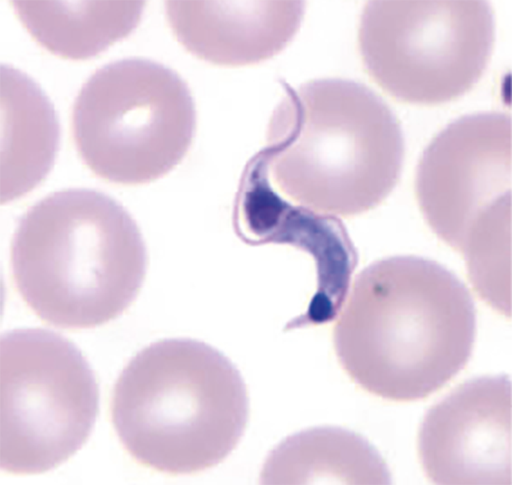
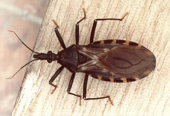

As doenças negligenciadas são aquelas causadas por agentes infecciosos ou parasitas e são consideradas endêmicas em populações de baixa renda. Essas enfermidades também apresentam indicadores inaceitáveis e investimentos reduzidos em pesquisas, [em] produção
de medicamentos e em seu controle. As doenças tropicais, como a malária, a doença de Chagas, a doença do sono (tripanossomíase humana africana, THA), a leishmaniose visceral (LV) [...] continuam sendo algumas das principais
causas de morbidade e mortalidade em todo o mundo. Estas enfermidades, conhecidas como doenças negligenciadas, incapacitam ou matam milhões [...]. As doenças negligenciadas são um grupo de doenças tropicais endêmicas, especialmente
entre as populações pobres da África, Ásia e América Latina. [...] As medidas preventivas e o tratamento para algumas dessas moléstias são conhecidos, mas não são disponíveis universalmente nas áreas mais pobres do mundo.
• Quais são as medidas profiláticas mais comuns para o combate de algumas protozooses?
• Por que o clima tropical contribui na incidência de protozooses transmitidas por vetores?
• De que modo se relacionam o ciclo de vida dos protozoários e os sintomas característicos das doenças causadas por esses microrganismos?
Neste capítulo serão abordadas as habilidades
EM13CNT202
e
EM13CNT202
.
Parasitologia
A área da Biologia denominada Parasitologia, hoje bastante desenvolvida, tem seus primeiros registros datados do século XVII, quando o naturalista holandês Anton van Leeuwenhoek (1632-1723), com um microscópio, fez as primeiras
observações de minúsculos organismos presentes em fezes humanas. O foco principal da Parasitologia é identificar e descrever comportamentos parasitários, isto é, visa estudar o tipo de interação ecológica em que organismos
(parasitas ou agentes etiológicos) vivem em associação com outros seres vivos (hospedeiros), dos quais obtêm as condições ideais para sua sobrevivência. Os parasitas, no entanto, causam prejuízos (doenças) ao hospedeiro.
Os hospedeiros podem ser de dois tipos: • hospedeiro definitivo: organismo em que ocorre a reprodução sexuada do parasita, garantindo a variabilidade genética de seus descendentes; • hospedeiro intermediário: organismo em que o parasita se reproduz de forma assexuada, gerando descendentes geneticamente idênticos.
Os ciclos de vida de parasitas que apresentam apenas um tipo de hospedeiro são denominados monóxenos
, sendo o
parasita autoico, enquanto aqueles em que há a participação de hospedeiros intermediários são heteróxenos, e o parasita é heteroico O organismo causador da doença é também chamado de agente
etiológico, enquanto, quando presentes, os organismos responsáveis pela transmissão do parasita são denominados agentes transmissores ou vetores. Alguns seres vivos, chamados de reservatórios, são capazes de abrigar parasitas, mas não ficam necessariamente doentes.
Protozooses
As protozooses são doenças parasitárias causadas por protozoários – organismos eucariontes, unicelulares, heterotróficos.
Amebíase
O agente etiológico da amebíase é a espécie Entamoeba histolytica, protozoário que se locomove pela emissão de pseudópodes. O ciclo biológico desses organismos apresenta dois estágios diferentes e bem definidos: o trofozoíto e o
cisto.
Cisto de E. histolytica (seta). Tamanho médio (diâmetro): 13 µm.
Trofozoíto de E. histolytica. Tamanho médio (comprimento): 30 µm.
Os trofozoítos são a forma ativa dos protozoários, isto é, capazes de se alimentar e de se reproduzir; apresentam diferentes formatos e tamanhos. Já os cistos têm formato esférico e diminuto e são formas resistência do parasita,
isto é, estão protegidos por um revestimento de quitina e polissacarídeos, que confere rigidez à estrutura e possibilita a sobrevivência em condições inóspitas.
Alguns termos são utilizados em relação ao número de casos, ou seja, a incidência de determinada doença em uma região, em um dado período de tempo: Surto: aumento repentino do número de casos de determinada doença em níveis acima do esperado. Epidemia: elevado número de casos de determinada doença em um dado local e período. Pandemia: situação em que o aumento do número de casos de determinada doença ocorre simultaneamente em diferentes regiões do planeta, inclusive em diferentes continentes.
Transmissão e sintomas
O ser humano é o reservatório desse parasita, mas, quando ingere água ou alimentos contaminados com cistos maduros de E. histolytica, a protozoose pode se instalar. Veja no esquema a seguir as formas de transmissão invasiva e não
invasiva da amebíase
Representação esquemática do ciclo biológico da Entamoeba histolytica, protozoário que causa a amebíase.
Os sintomas, quando presentes, costumam ser cólica, diarreia e fezes com sangue. Em casos graves, pode haver problemas hepáticos.
Giardíase
O agente etiológico da giardíase é o protozoário flagelado Giardia lamblia. Assim como as amebas, a giárdia apresenta dois estágios de vida –
cistos e trofozoíto – e um ciclo monóxeno. Os cistos são pequenas estruturas esféricas, dotadas de quatro núcleos, que podem ser eliminadas em grande quantidade, de 300 milhões a 14 bilhões por dia, capazes
de resistir por até dois meses no ambiente externo. Sobrevivem em água doce e fria e têm grande tolerância ao aquecimento, à desidratação e até a determinados processos de cloração da água. Os trofozoítos, por sua vez,
apresentam formato de pera e duas estruturas nucleares. Sua locomoção ocorre pela presença de cerca de oito flagelos. Na porção ventral existe um disco adesivo, semelhante a uma ventosa, responsável pela adesão do parasita
à mucosa intestinal do hospedeiro.
Cisto de G. lamblia (seta). Tamanho médio (comprimento): 15 µm.
Transmissão e sintomas
A infecção ocorre por meio da ingestão de cistos – ciclo fecal-oral –, que iniciam o desencistamento durante a passagem pelo meio ácido do estômago, que se completa no duodeno. Em seguida, os trofozoítos iniciam a colonização
do intestino delgado. Novos parasitas são gerados pela reprodução assexuada dos trofozoítos. Quando há uma alta carga parasitária, a mucosa intestinal pode ficar irritada e produz grande quantidade de muco. Do mesmo modo, podem
ocorrer alterações na produção de enzimas e prejuízos na absorção de nutrientes. esse estágio, os trofozoítos podem ser eliminados pelas fezes, porém não sobrevivem no ambiente. No intestino, a alteração do pH e a ação
de sais biliares estimulam os trofozoítos a produzirem e secretarem uma membrana cística resistente, composta de quitina, que possibilita a formação de cistos. O processo patológico depende da quantidade de cistos ingeridos
e de trofozoítos que colonizaram o intestino. Na maioria das vezes, trata-se de um quadro assintomático ou com leves manifestações, tais como fezes volumosas e fétidas, diarreia, dores abdominais, náuseas e flatulência. Em
casos extremos e menos frequentes, o paciente pode desenvolver a síndrome da má absorção intestinal, associada à anemia.
Trofozoítos de G. lamblia. Tamanho médio (comprimento): 20 µm.
Tratamento e prevenção
Tanto a amebíase quanto a giardíase contam com o mesmo tipo de tratamento e prevenção. As medidas profiláticas mais eficientes para se evitar a contaminação por esses protozoários são: • condições adequadas de saneamento básico;
• higienização dos alimentos – a lavagem cautelosa dos alimentos e a fervura da água evitam que os cistos se mantenham viáveis; • higiene pessoal – principalmente lavar as mãos antes das refeições e após usar o banheiro.
Em alguns casos, é recomendável que o indivíduo acometido seja afastado de atividades que envolvam a manipulação de alimentos.
Cosmopolita: ocorrência da doença em centros urbanos. Zoonose: doença que acomete animais não humanos e que também pode ser transmitida aos seres humanos.
A taquizoíta é a forma de rápida multiplicação presente no início da infecção. Esta forma de vida é responsável pelas manifestações clínicas da parasitose. Tamanho (comprimento): 4-8 µm.
A bradizoíta é a forma de multiplicação lenta originada a partir da diferenciação das taquizoítas e responsável pela formação de cistos teciduais, caracterizando estágios mais avançados da parasitose. Tamanho: 5-50 µm.
A esporozoíta é a forma que se desenvolve dentro dos oocistos gerados a partir da reprodução sexuada do protozoário e eliminados pelas fezes do hospedeiro definitivo. Tamanho: 10-12 µm.
Oocisto é o tipo de estrutura reprodutiva a partir da qual novas células são produzidas assexuadamente.
O ciclo de vida facultativamente heteróxeno do protozoário possibilita que os organismos infectados funcionem como hospedeiros intermediários ou definitivos. Apenas os membros na família Felidae, à qual pertencem, por exemplo,
os gatos domésticos, servem como hospedeiros definitivos do T. gondii, os quais são eliminados pelas fezes e contaminam o ambiente. Acredita-se que os felinos sejam contaminados devido ao hábito carnívoro, pois ingerem os cistos
do parasita nos tecidos das presas e atuam como reservatórios da doença.
Transmissão e sintomas
Veja no esquema a seguir como ocorre a contaminação e quais as etapas do desenvolvimento do transmissor da toxoplasmose.
Fonte: Principais doenças causadas por protozoários. Suzana Segura Muñoz & Ana Paula Morais Fernandes. Licenciatura em Ciências - USP/Univesp - Módulo 5. Disponível em: (https://midia.atp.usp.br/plc/plc0501/impressos/plc0501_06.pdf)
Representação esquemática do ciclo de contaminação da toxoplasmose.
Representação esquemática do ciclo biológico do T. gondii, protozoário que provoca a toxoplasmose
a maioria das vezes, a toxoplasmose é assintomática. Quando presentes, os sintomas incluem febre, dor de cabeça e dor muscular.
Tratamento e prevenção
A toxoplasmose, na forma congênita, é mais grave. Caso a infecção ocorra nos primeiros meses de gestação, o feto pode desenvolver alguma má-formação ou, então, ser abortado. A transmissão vertical é a forma de transmissão
da toxoplasmose entre mãe e feto, que se dá por meio da passagem de taquizoítos pela placenta. O tratamento para a toxoplasmose é feito com medicamentos antiparasitários, sob prescrição médica. Para prevenir
a doença, recomenda-se: • higiene pessoal – lavar bem as mãos antes das refeições e usar luvas em atividades de jardinagem; • higiene do ambiente – limpeza diária dos locais usados pelos animais domésticos
e remoção adequada das fezes; gestantes devem evitar o contato com as fezes desses animais; • evitar a ingestão de carnes cruas ou malpassadas, pois podem estar contaminadas por cistos ou oocistos.
Esquizonte (à esquerda da imagem) e trofozoíto (à direita da imagem) de P. falciparum.
Autóctone: sinônimo de “natural da região”. No âmbito da medicina, casos autóctones são aqueles em que os indivíduos se contaminaram na própria região em que vivem. Esquizogonia: processo de divisão em que o organismo sofre fissão múltipla para produzir muitas células-filhas. Esquizonte: célula resultante do processo de esquizogonia.
Malária
Reconhecida como um grave problema de saúde no mundo, a malária é uma doença de alto potencial endêmico e que atinge, principalmente, países das regiões tropicais e subtropicais de todo o globo. No Brasil, a região amazônica
é considerada área endêmica, com a grande maioria dos casos autóctones. Também conhecida como maleita, febre terçã ou febre quartã, a malária tem como agente etiológico protozoários apicomplexos do gênero
Plasmodium. Quatro espécies afetam humanos: Plasmodium vivax, Plasmodium falciparum, Plasmodium malarie e Plasmodium ovale. Enquanto as três primeiras são as variedades mais comuns no território brasileiro, o P. ovale
ocorre apenas na África. De maneira geral, os plasmódios apresentam três formas evolutivas durante seu ciclo biológico: esporozoítos – forma infectante que atinge a corrente sanguínea do ser humano, têm afinidade
por células do fígado, nas quais, por esquizogonia, formam esquizontes; merozoítos – são liberados dos esquizontes e invadem as hemácias do hospedeiro; gametócitos – derivados da diferenciação de parte dos merozoítos,
interagem apenas com as células do sistema digestório do agente transmissor
Fêmea do mosquito do gênero Anopheles, sobre a pele de um ser humano. Tamanho médio (comprimento): 6 mm.
Transmissão e sintomas
No ciclo de vida do plasmódio podem ser observadas reprodução assexuada e sexuada, cada uma ocorrendo em um hospedeiro específico. Ciclo do Plasmodium no mosquito A reprodução sexuada ocorre no trato digestório de fêmeas de mosquitos do gênero Anopheles, vetores da doença. Esses insetos são popularmente conhecidos como “mosquitos-prego”
por se posicionarem de modo perpendicular ao pousarem. As fêmeas são hematófagas porque obtêm nutrientes do sangue humano para a postura e desenvolvimento de seus ovos. Ao picar o ser humano contaminado com a malária,
a fêmea do mosquito Anopheles adquire as formas de gametócitos dos plasmódios presentes no sangue do indivíduo. No estômago do mosquito, ocorre a diferenciação dessas células em gametas, que se fundem, gerando um zigoto
móvel que migra para o intestino do inseto, onde o oocisto é formado. No interior do oocisto, ocorre um processo chamado esporogonia, no qual se formam os esporos que se desenvolverão em esporozoítos. Os oocistos
se rompem liberando os esporozoítos no sistema circulatório do inseto e se instalam nas glândulas salivares do mosquito que, ao picar o ser humano, libera as formas infectantes do protozoário.
Representação esquemática do ciclo do Plasmodium no mosquito.
Ciclo do Plasmodium no ser humano
Veja no esquema a seguir como ocorre a contaminação e quais as etapas do desenvolvimento do transmissor da malária no ser humano.
Fonte: Principais doenças causadas por protozoários. Suzana Segura Muñoz & Ana Paula Morais Fernandes. Licenciatura em Ciências - USP/Univesp - Módulo 5. Disponível em: (https://midia.atp.usp.br/plc/plc0501/impressos/plc0501_06.pdf)
Representação esquemática do ciclo biológico do Plasmodium, protozoário que causa a malária.
Os acessos febris característicos da malária são decorrentes da hemozoína, um pigmento malárico originado pela degradação de hemoglobina liberada na ruptura das hemácias Além da picada do mosquito, a malária também pode ser
transmitida por meio do contato direto com sangue contaminado, como em transfusões sanguíneas ou transplantes de órgãos, e por transmissão vertical, ou seja, por meio da placenta da mãe para o feto. Quando tratada logo no início,
as chances de complicações diminuem significativamente. A malária no ser humano apresenta sintomas muito caraterísticos, tais como quadros de ciclos febris e calafrios. O intervalo entre as manifestações clínicas, a gravidade
e os casos de óbito decorrentes da doença dependem, entre outros fatores, da espécie infectante de plasmódio. A malária gerada da infecção por P. falciparum caracteriza-se por uma febre terçã maligna, isto é, o ciclo eritrocítico
completa-se a cada 48 horas, e a febre decorrente da ruptura das hemácias geralmente é alta. Essa espécie de plasmódio é responsável por cerca de 95% das mortes de indivíduos acometidos por malária. Já a doença ocasionada
pelo P. vivax é mais branda, conhecida apenas como febre terçã, isto é, ciclo eritrocítico a cada 48 horas, porém, benigna. No entanto, após o indivíduo estar curado da malária causada pelo P. vivax, há a possibilidade de a
doença retornar em consequência da reativação de formas latentes – hipnozoítos – mantidas nas células do fígado. Diferentemente das outras espécies, o P. malarie ocasiona quadros febris a cada 72 horas, caracterizados
pela febre quartã que, assim como a ocasionada pelo P. vivax, é considerada benigna.
Tratamento e prevenção
Na região amazônica, a de maior registro de malária no território brasileiro, o combate ao vetor tem se mostrado uma medida inviável, já que o mosquito é silvestre e pode picar tanto humanos quanto outros animais, dentro ou fora
do ambiente doméstico. As medidas profiláticas mais recomendadas são o uso de repelentes, ainda que com algumas ressalvas, e o tratamento dos doentes para controlar a progressão da protozoose.
Os dois tipos de febre que podem ocorrer em pacientes com malária são classificados de acordo com os intervalos de seus picos:
Febre terçã: um dia com febre, dois dias sem febre. Febre quartã: um dia com febre, três dias sem febre.
Questão resolvida
1
Enem 2016 A sombra do cedro vem se encostar no cocho. Primo Ribeiro levantou os ombros; começa a tremer. Com muito atraso. Mas ele tem no baço duas colmeias de bichinhos maldosos, que não se misturam, soltando enxames
no sangue em dias alternados. E assim nunca precisa de passar um dia sem tremer.
ROSA, J. G. Sagarana. Rio de Janeiro: Nova Fronteira, 1984.
O texto de João Guimarães Rosa descreve as manifestações das crises paroxísticas da malária em seu personagem. Essas se caracterizam por febre alta, calafrios, sudorese intensa e tremores, com intervalos de 48h ou 72h, dependendo
da espécie de Plasmodium. Essas crises periódicas ocorrem em razão da
lise das hemácias, liberando merozoítos e substâncias denominadas hemozoínas
invasão das hemácias por merozoítos com maturação até a forma esquizonte.
reprodução assexuada dos esporozoítos no fígado do indivíduo infectado.
liberação de merozoítos dos hepatócitos para a corrente sanguínea.
formação de gametócitos dentro das hemácias.
Resolução:
Alternativa: A Os sintomas da malária são ocasionados pela ruptura das hemácias decorrentes do estágio em que ocorre a esquizogonia eritrocítica. As hemácias invadidas por merozoítos se rompem para liberar essas formas do
Plasmodium no sistema circulatório, porém, em conjunto com os merozoítos, também é liberado um pigmento malárico: a hemozoína que resulta da degradação de hemoglobina.
Além da tripanossomíase americana, existe a
tripanossomíase africana ou
doença do sono. O Trypanosoma brucei é transmitido por meio de insetos do gênero Glossina, conhecidos como moscas tsétsé. A doença pode atingir os sistemas nervoso e endócrino, causa distúrbios
sensoriais e de coordenação motora, além de interferir no controle do ritmo circadiano, o que provoca distúrbios no sono, ou seja, a pessoa sente dificuldades para dormir durante a noite e dorme durante
o dia.
Doença de Chagas
A doença de Chagas, também conhecida como tripanossomíase americana, é endêmica em 21 países da América Latina e afeta entre 16 e 18 milhões de pessoas nessas regiões. Aproximadamente 100 milhões de indivíduos estão expostos à infecção. Todos os aspectos da parasitose foram descobertos pelo médico e pesquisador Carlos Chagas, daí o nome doença de Chagas. Ao descobrir o protozoário flagelado que é o agente etiológico da doença, Carlos Chagas o nomeou Trypanosoma
cruzi, em homenagem ao também médico sanitarista Oswaldo Cruz. O T. cruzi apresenta três formas evolutivas bem definidas durante seu ciclo biológico: • Tripomastigota: forma dotada de um flagelo que se estende
por toda a sua estrutura, é altamente infectante e encontrada na porção posterior do intestino do agente transmissor e também no sangue de vertebrados infectados. • Amastigota: estruturalmente arredondada, é a
forma encontrada no interior de células de hospedeiros infectados. • Epimastigota: estruturalmente, assemelha-se à forma tripomastigota, entretanto só é encontrada no tubo digestório do agente transmissor.

Forma tripomastigota em tecido sanguíneo, vista em microscopia óptica. Tamanho (comprimento): 12 a 30 µm.
Formas amastigotas em tecido cardíaco, vistas em microscopia óptica. Tamanho: 4 µm.
Formas epimastigotas, vistas em microscopia óptica. Tamanho (comprimento): 9-15 µm.

Triatoma infestans, uma das espécies transmissoras do Trypanosoma cruzi. Tamanho médio (comprimento): 3 cm.
Transmissão e sintomas
A doença de Chagas tem como agente transmissor insetos popularmente conhecidos por “barbeiro” ou “chupança” e, comumente, encontrados nas frestas de casas de pau a pique. Entre os insetos transmissores, duas espécies são de grande destaque: a Triatoma
infestans e a Triatoma brasiliensis, por causa de sua ampla distribuição, mecanismos eficientes de alimentação e ciclos biológicos rápidos. Outros mecanismos de transmissão do
T. cruzi já foram identificados, tais como transfusões sanguíneas, transmissão vertical, acidentes laboratoriais e ingestão de cana-de-açúcar e açaí com fragmentos de barbeiros contaminados; consequentemente, os protozoários
foram liberados nos produtos. Existem três formas de manifestação da doença de Chagas, que podem ser classificadas como: aguda, indeterminada e crônica. Durante a
fase aguda, o indivíduo pode apresentar algum sinal de porta de entrada aparente, conhecidos como Sinal de Romaña e Chagoma de inoculação, e manifestações como febre e mal-estar
Sinal de Romaña: sinal inflamatório em uma das pálpebras que ocorre quando há contaminação do parasita na mucosa ocular. Chagoma de inoculação: reação inflamatória aparente no local da penetração do parasita que pode persistir por até oito semanas.
Na fase indeterminada, a infecção é assintomática e pode nunca se evidenciar clinicamente ou se manifestar de 10 a 15 anos após a infecção inicial. Na fase crônica, as ocorrências clínicas mais comuns são: •
no coração – devido à multiplicação da forma amastigota nas células do coração, a musculatura cardíaca é danificada, o que causa o aumento do órgão (cardiomegalia); o indivíduo pode desenvolver síndrome de insuficiência
cardíaca, o que pode causar arritmias graves e até morte súbita; • no trato digestório – também por consequência da multiplicação dos
amastigotas, a musculatura do trato digestório fica comprometida e a motilidade é alterada, o que afeta a deglutição e a evacuação.
Fonte: Principais doenças causadas por protozoários. Suzana Segura Muñoz & Ana Paula Morais Fernandes. Licenciatura em Ciências – USP/Univesp - Módulo 5. Disponível em: (https://midia.atp.usp. br/plc/plc0501/impressos/plc0501_06.pdf)
Representação esquemática do ciclo biológico do Trypanosoma cruzi.
Tratamento e prevenção
O tratamento para a doença de Chagas depende da fase em que ocorre o diagnóstico. Não há vacina para prevenir a contaminação. Como a transmissão está diretamente relacionada às condições habitacionais, as medidas de profilaxia
mais comuns são: • conservação das casas – estimular a construção de casas de alvenaria em substituição a casas de pau a pique; • combate ao vetor – uso de inseticidas e repelentes, bem como o emprego de telas em
portas e janelas para evitar a entrada do barbeiro nas residências.
Discussão em sala
O T. cruzi e seus vetores parecem estar há muito tempo nos continentes. Entretanto, a forma endêmica da doença humana é relativamente recente, datada do aparecimento dos ciclos de agricultura e pecuária. Nos ciclos agropecuários,
muitas áreas foram desmatadas, o que reduziu o hábitat de animais silvestres que eram fonte de alimento para os barbeiros. A busca por alimento somada a mutações genéticas ocorridas ao longo do tempo possibilitaram
a interação dos barbeiros com o ser humano, cujo sangue passou a ser fonte de alimento para os insetos iniciando, assim, o ciclo de transmissão do T. cruzi. • Por que as espécies de barbeiros adaptadas a domicílios
parecem se restringir apenas a áreas desmatadas?
Mosquitos do gênero Lutzomyia são agentes transmissores da leishmaniose. Tamanho médio (comprimento): 3 mm.
Leishmaniose
O agente causador da leishmaniose é encontrado em cerca de 88 países situados próximos às regiões tropicais e subtropicais do globo. Há diferentes formas de manifestação dessa protozoose, como a cutânea, conhecida como
leishmaniose tegumentar americana (LTA), e a
leishmaniose visceral (LV), mais grave, cuja incidência tem aumentado no Brasil, sendo recorrente na Índia, no Nepal e em Bangladesh. As diferentes leishmanioses são causadas por espécies distintas de
protozoários pertencentes ao gênero Leishmania, que são transmitidas entre animais silvestres ou destes para o ser humano por meio da picada das fêmeas dos mosquitos hematófagos Phlebotominae pertencentes ao gênero
Lutzomyia, estes conhecidos como flebótomos, mosquito-palha, birigui, cangalha ou tatuquira. A leishmaniose tegumentar americana (LTA), também conhecida como úlcera de Bauru, é endêmica no Brasil e está presente
em todos os estados. O agente etiológico da LTA é a espécie Leishmania brasiliensis. A leishmaniose visceral (LV) ou calazar, no Brasil, tem como agente etiológico a Leishmania chagasi. Na Índia, o agente causador da
LV é a Leishmania donavani. Trata-se da forma mais grave de leishmaniose, que causa aumento do fígado e baço e quadros de febre alta, quase sempre evoluindo para óbito em crianças. A Leishmania apresenta duas formas
de vida principais: • Amastigota: desprovida de estrutura flagelar e encontrada em tecidos dos hospedeiros vertebrados infectados.
Forma amastigota de Leishmania. Tamanho médio: 5 mm. A. Representação esquemática das estruturas da forma amastigota; B. Forma amastigota. Eletromicrografia de varredura.
• Promastigota: dotada de flagelo. Pode ser diferenciada em procíclico ou metacíclico, conforme estão presentes no vetor ou no hospedeiro vertebrado, respectivamente.
Forma promastigota de Leishmania. Tamanho (comprimento): 16-40 μm. A. Representação esquemática das estruturas do promastigota; B. Forma promastigota. Eletromicrografia de varredura.
Transmissão e sintomas
Após a picada do flebótomo fêmea, as formas promastigotas metacíclicas entram na circulação sanguínea e, em seguida, são fagocitadas por células de defesa presentes no sangue dos vertebrados. Ainda nessas células, os promastigotas
perdem o flagelo e assumem a forma amastigota, que se multiplica assexuadamente, aumentando o número de indivíduos e rompendo a célula. Os novos amastigotas são liberados na corrente sanguínea e, então, ingeridos pelo
vetor. No intestino, modificam-se em promastigotas cíclicos e se multiplicam assexuadamente, causando alterações no tubo digestório dos mosquitos, que acabam por transferir as novas formas promastigotas ao alimentar-se
de sangue. Veja no esquema a seguir como ocorre a contaminação e quais as etapas do desenvolvimento do transmissor da leishmaniose tegumentar americana (LTA) e leishmaniose visceral (LV).
Representação esquemática do ciclo biológico da Leishmania, protozoário que causa a leishmaniose tegumentar americana e a leishmaniose visceral.
Além do ser humano, infecções por Leishmania já foram descritas em diversos animais silvestres e domésticos, como cães, gatos e cavalos. Acredita-se que são reservatórios naturais do protozoário apenas algumas espécies de roedores
e marsupiais. O papel dos animais domésticos como reservatórios é ainda indefinido. Em alguns casos, são considerados hospedeiros acidentais da doença. Os sintomas da doença estão caracterizados quando há o surgimento
de feridas e posterior formação de úlceras que, quando não tratadas, podem evoluir e destruir tecidos da cavidade nasal, laringe e faringe, ocasionando deformações no indivíduo acometido.
Tratamento e prevenção
É difícil adotar medidas profiláticas para o controle dos casos de leishmaniose diante da impossibilidade de combater os flebótomos ou mesmo os reservatórios do protozoário. No Brasil, está disponível uma vacina contra leishmaniose
visceral canina que tem se mostrado eficiente no controle da doença em cães. Apesar disso, ainda não há estudos que comprovem a eficiência da vacina em casos de leishmaniose visceral humana. O ideal é que haja limpezas
periódicas em quintais e abrigos de animais domésticos a fim de evitar a instalação e a reprodução de insetos vetores, bem como colocar coleiras repelentes nos animais domésticos, principalmente em locais de incidência elevada
da protozoose. Embora esteja disponível um tratamento para a leishmaniose visceral, os medicamentos não eliminam por completo o protozoário nos indivíduos.
Aplicando conhecimentos
1
que é a giardíase? Qual é o agente causador dessa doença?
2
As amebas podem ser organismos de vida livre ou parasitas. Cite um exemplo de ameba parasita e uma doença que ela causa.
3
causa acessos de febre nas pessoas contaminadas por protozoários do gênero Plasmodium?
4
Foi distribuída uma cartilha com indicação de cuidados para evitar a contaminação por protozoários. Na cartilha, havia as seguintes informações:
Utilizar telas nas janelas e portas
Lavar bem os alimentos.
Utilizar inseticidas.
Substituir construções de pau a pique por construções de alvenaria.
Lavar bem as mãos antes das refeições e ao manusear alimentos
Ferver a água antes de beber.
Entre essas medidas, quais seriam eficientes para evitar a amebíase e a giardíase? Por quê?
5
Udesc Analise as proposições quanto à toxoplasmose.
Esta doença é causada pelo protozoário parasita intracelular Toxoplasma gondii e um dos modos de transmissão é pela ingestão de oocistos presentes nas fezes dos gatos infectados. Esses oocistos podem se prender ao pelo
do gato e quando a pessoa o acaricia, os oocistos podem se aderir à mão. Caso ela não lave as mãos, e as leve à boca, pode, acidentalmente, ingerir os oocistos e se infectar
As mulheres grávidas que desenvolvem esta doença podem transmiti-la ao feto.
Esta doença pode ser transmitida de pessoa a pessoa, pela ingestão de oocistos presentes nas fezes dos humanos infectados, isso ocorre quando a pessoa infectada faz a higiene anal, podendo contaminar as mãos, e assim transmiti-la
a algum alimento, que posteriormente será ingerido por outra pessoa
Um dos modos de transmissão da toxoplasmose é pela ingestão de carnes cruas ou malpassadas, principalmente as de porco, vaca ou carneiro, quando contêm cistos de Toxoplasma gondii.
Assinale a alternativa correta.
Somente as afirmativas I, II e IV são verdadeiras
Somente as afirmativas I e III são verdadeiras.
Somente as afirmativas II e III são verdadeiras
Somente as afirmativas II e IV são verdadeiras.
Somente as afirmativas I, II e III são verdadeiras.
CONSOLIDANDO SABERES
1
FCMSCSP 2019 A figura apresenta algumas características do barbeiro, inseto relacionado à doença de Chagas.
que Reino biológico pertence o agente etiológico da doença de Chagas? Em que órgão humano ocorre, preferencialmente, a reprodução assexuada do agente etiológico da doença?
Explique como a picada do inseto em pessoas saudáveis e em pessoas contaminadas permite a continuidade do ciclo de vida do agente etiológico da doença
2
UFRGS 2019 Um surto de toxoplasmose foi registrado, em 2018, na cidade de Santa Maria (RS). Sobre a toxoplasmose, é correto afirmar que
caramujo de água doce como hospedeiro intermediário do verme causador da doença.
pode ser transmitida entre humanos por insetos hemípteros (barbeiros) que defecam ao sugar o sangu
é causada por um protozoário transmitido através da ingestão de carne malcozida ou de alimentos contaminados com fezes de gatos.
provoca lesões de bordas avermelhadas, de difícil cicatrização, na pele e nas mucosas.
causa perfurações nas paredes do intestino que levam à perda de sangue e à anemia, gerando palidez, também chamada de amarelão.
3
UEPG-PR 2 2019 Os protozoários compreendem um grupo de organismos unicelulares heterotróficos, que habitam os mais diversos tipos de ambientes e ainda podem apresentar relações de troca de benefícios com outros seres
vivos. Sobre o assunto, assinale a opção que for incorreta.
A ameba é capaz de reagir a estímulos químicos por meio da emissão de pseudópodes, expansões citoplasmáticas com as quais o organismo pode aproximar-se do alimento, englobá-lo por fagocitose e digeri-lo em vacúolos digestivos.
A doença de Chagas é causada pelo protozoário flagelado Trypanosoma cruzi, transmitido por percevejos, conhecidos como barbeiros. Depois de picar uma pessoa, o inseto contaminado defeca e os tripanossomos podem penetrar na
pele quando a pessoa coça o local, atingindo a circulação sanguínea.
A Leishmaniose tegumentar americana (ou úlcera de Bauru) é causada pela ingestão de cistos de Entamoeba histolytica presentes nas fezes de gatos ou em carnes cruas ou malcozidas. O doente apresenta infecções no intestino e
diarreias, podendo levar à desidratação.
A malária é causada pelo plasmódio e transmitida pela picada da fêmea do mosquito do gênero Anopheles. O ser humano é considerado o hospedeiro intermediário (abriga a fase assexuada do parasita) e o mosquito, o hospedeiro definitivo
(abriga a fase sexuada do parasita).
Os protozoários apresentam uma grande variedade de formas e hábitats, além de serem causadores de doenças em animais como é o caso da Doença de Chagas.
4
FCMMG 2020 Leia o texto abaixo:
AM registra mais de 11 mil casos de malária no primeiro bimestre de 2018
De acordo com o Ministério da Saúde, o Amazonas liderou a incidência dos casos de malária entre os estados brasileiros e concentrou maior número de casos da doença em 2017. Dos 193.876 casos de malária registrados no Brasil, 41,8%
dos diagnósticos são de pessoas infectadas nos municípios amazonenses. Em 2016, foram registrados no país 129.248 casos de malária.
(https://g1.globo.com/am/amazonas/noticia/am-registra-mais-de-11-mil-casos- -de-malaria-no-primeiro-bimestre-de-2018-veja-cidades-com-maior-incidencia.ghtml. Acesso em 12/09/2019.)
Com base nas informações e em seus conhecimentos, é CORRETO afirmar que a malária:
tem como agente patológico um ectoparasito
é controlada com o uso de uma vacina específica.
é endêmica em todo o Brasil, exceto a região Sul.
é transmitida por um díptero que carrega o parasito.
5
Unicamp-SP 2019 A malária representa um dos principais problemas de saúde pública no mundo. Embora a dimensão geográfica da transmissão esteja encolhendo no Brasil, o país ainda registra 42% dos casos da doença nas
Américas. A Fundação Oswaldo Cruz, do Rio de Janeiro, recentemente desenvolveu um preparado com alta eficácia antimalárica, agora em fase de ensaios clínicos
eficácia antimalárica, agora em fase de ensaios clínicos. (Fontes: “Desafios para eliminação da malária”, Agência Fapesp, 2017; MAÍRA Menezes, “Malária: ensaio clínico aponta alta eficácia e ausência de resistência a medicamento”,
Portal Fiocruz, 2016.)
Levando em conta seus conhecimentos sobre o ciclo de vida do Plasmodium, assinale a alternativa que indica um possível mecanismo de ação do preparado antimalárico.
Alterar a morfologia das hemácias dos mosquitos, diminuindo a taxa de infecção pelo parasita.
Impedir a entrada de parasitas nos linfócitos, reduzindo a carga de gametócitos circulantes.
Promover a multiplicação de esporozoítos no fígado, reduzindo o número de gametócitos.
Inibir a multiplicação de merozoítos nos eritrócitos, diminuindo a carga de parasitas circulantes.
6
Famerp-SP 2019 A leishmaniose visceral humana é uma doença que afeta o baço e o fígado, provocando problemas imunológicos e quadros hemorrágicos. Em casos mais graves, pode causar a morte. Uma pessoa pode adquirir essa
doença quando
é picada por fêmeas do mosquito Lutzomyia sp
entra em contato com fezes contaminadas de percevejos
nada em águas contaminadas com cercárias.
anda descalça em solos úmidos com larvas de vermes.
ingere verduras contaminadas com ovos de parasitas.
7
UFSC 2018 Em 2016, houve o registro de dois casos em Santa Catarina de leishmaniose visceral humana, de pessoas que contraíram a doença em outros estados. O primeiro caso autóctone de leishmaniose visceral humana em
Santa Catarina foi confirmado no dia 16 de agosto de 2017 pelo Laboratório Central de Saúde Pública de Santa Catarina (LACEN). Trata-se de um homem de 53 anos, morador de Florianópolis. O cão, por ser um animal doméstico
e intimamente próximo ao ser humano, representa um risco à saúde pública quando doente. Até maio deste ano, Florianópolis havia identificado 17 cães com diagnóstico positivo para leishmaniose visceral, resultando em cinco
eutanasiados, conforme informações do Centro de Controle de Zoonoses municipal.
Sobre a leishmaniose visceral, é correto afirmar que:
01. os cães representam um risco à saúde pública quando doentes, pois transmitem a leishmaniose visceral aos seres humanos. 02. a leishmaniose visceral é causada pelo vírus Leishmaniose chagasi. 04. em áreas com transmissão de leishmaniose, indica-se a utilização de coleiras repelentes de insetos nos cães. 08. deve-se ter cuidado ao descartar os resíduos domésticos, a fim de não favorecer o crescimento populacional de mosquitos transmissores de doenças como a leishmaniose, a dengue e a zika. 16. nas áreas com casos confirmados de leishmaniose visceral canina, deve-se realizar a eutanásia em todos os cães da região. 32. considerando que a forma de transmissão da leishmaniose visceral é igual à forma de transmissão da larva do bicho-geográfico (Ancylostoma brasiliensis), devem-se evitar cães em praias e em parques infantis que contenham
áreas com areia.
Soma:
8
Unesp 2018 Uma pesquisa realizada com a participação de um “robô cientista” de inteligência artificial descobriu que o triclosan, um ingrediente comum nas pastas de dente, pode ser desenvolvido para combater cepas da
malária resistentes a medicamentos. O triclosan indicou ter potencial para interromper infecções da malária em dois estágios críticos, no fígado e no sangue, pela inibição da enzima do parasita chamada DHFR, envolvida na
síntese dos ácidos nucleicos (DNA e RNA).
(https://oglobo.globo.com. Adaptado.)
Como medicamento, o triclosan teria o potencial de interromper
o rompimento das células do fígado, que libera toxinas e causa febre.
o rompimento das células do fígado, que libera toxinas e causa febre.
a invasão das células do fígado por esporos do parasita.
a produção de gametas do parasita, por mitose, no interior das hemácias.
a reprodução sexuada do parasita no interior dos leucócitos.
9
Unicid-SP 2019 O Toxoplasma gondii afeta diversas espécies de aves e mamíferos. Os gatos e outros felinos são hospedeiros definitivos desse parasito, que invade uma ampla variedade de células nucleadas. Em roedores contaminados
com o T. gondii, observam-se comportamentos de risco, nos quais os animais deixam de evitar encontros com seus predadores felinos. O protozoário pode atingir os seres humanos, e uma mulher grávida contaminada pode
transmitir o parasito ao seu feto por via placentária, podendo causar cegueira, distúrbios neurológicos e até morte fetal.
Considerando o ciclo reprodutivo do T. gondii, por que os gatos são considerados hospedeiros definitivos? Qual a vantagem para o T. gondii em causar comportamentos de risco aos roedores?
Como ocorre a transmissão de T. gondii aos seres humanos? Em uma mulher grávida, como o parasito chega à circulação fetal após atravessar a barreira placentária?
10
Unicamp-SP A malária é a principal parasitose dos países tropicais. Segundo a Organização Mundial da Saúde, há mais de 200 milhões de casos de malária a cada ano e 500 mil deles ocorrem no Brasil. Até hoje, a principal
forma de combate à malária consiste no controle do vetor de seu agente etiológico. No entanto, em estudo publicado na revista Science em setembro de 2011, cientistas anunciaram que vacinas produzidas a partir de células
inteiras do agente causador da malária, depois de submetidas a uma dose letal de radiação γ, deram bons resultados em estudos preliminares realizados inclusive com humanos.
Qual é o agente causador da malária? E qual é o seu vetor?
Qual é a importância do tratamento das células dos agentes causadores da malária com dosagem letal de radiação? Como células mortas podem agir como vacina?
Superação
1
FMJ-SP 2015 Caso um mosquito não infectado pique uma pessoa infectada, ele fica infectado e pode depois transmitir a malária a outras pessoas não infectadas. Em geral, dez dias a seis semanas após uma pessoa ter sido
infectada aparecem os sintomas da malária, como febre alta e tremores. A malária causada pelas bactérias Plasmodium vivax, P. ovale e P. malariae provoca destruição dos glóbulos vermelhos pelos parasitas, em intervalos
específicos. Uma vez diagnosticada, o médico deve receitar medicamentos específicos o mais rápido possível, para evitar complicações.
(Guia Veja de Medicina e Saúde, 2008. Adaptado.)
Do ponto de vista biológico, o texto apresenta uma informação incorreta. Identifique esse erro e faça a devida correção.
Pesquisadores decifraram o genoma do mosquito Anopheles darlingi (transmissor da malária no Brasil) e isso levou à descoberta de genes envolvidos com o sistema sensorial e outros que codificam proteínas nas glândulas salivares
(www.bv.fapesp.br)
Explique por que essas duas descobertas podem abrir precedentes para reduzir a transmissão da malária
No enem é assim
As questões selecionadas nesta seção são prioritariamente do Enem, mas questões de vestibulares diversos que apresentam características semelhantes aos itens do referido exame também foram usadas como recurso para estudo.
1
Udesc Assinale a alternativa correta quanto aos protozoários.
Os protozoários de água doce possuem vacúolos pulsáteis ou contráteis, que permitem a digestão através da clasmocitose.
As amebas são protozoários do filo Sarcodina e se movimentam por meio de cílios.
Os protozoários são unicelulares, eucariontes e heterotróficos. Vivem na água ou no solo, livres ou em associações com outros seres vivos. Sua digestão é intracelular.
A reprodução assexuada das amebas ocorre por esquizogonia, originando duas células-filhas.
Os paramécios são protozoários do filo Mastigophora e se locomovem por meio de cílios.
2
Todos os animais devem resolver os mesmos problemas de existência – procura de alimento e de oxigênio, manutenção de equilíbrio hídrico e salino, remoção de detritos metabólicos e perpetuação da espécie. O “design” de corpo
necessário para responder a esses problemas está correlacionado, em grande parte, a quatro fatores: 1. o tipo de ambiente – marinho, de água doce ou terrestre – no qual o animal vive; 2. o tamanho do animal; 3. o modo de
existência do animal; e 4. as restrições do genoma do animal. A última frase refere-se às limitações impostas pelo “design” ancestral controlado pela composição genética do animal. Por exemplo, ocorre uma diversidade incrível
no “design” do caramujo, mas o próprio “design” impõe determinadas limitações nas possibilidades do mesmo; por exemplo, não há caramujos voadores.
Ruppert, E. E.; Barnes, R. D. Zoologia dos invertebrados. 6. ed. São Paulo: Roca, 1996.
Levando em conta os protozoários, seres eucariontes unicelulares, e sua sobrevivência, é correto afirmar que:
as células dos animais são mais complexas que as células dos protozoários, pois são seres superiores e mais evoluídos.
as células dos protozoários são mais complexas que as células dos animais, pois devem ter estruturas responsáveis por realizar todas as funções vitais.
as células dos animais e dos protozoários são iguais em níveis de complexidade, pois são células eucariontes.
as células dos animais e dos protozoários são iguais em níveis de complexidade, já que os protozoários são os ancestrais dos animais.
as células dos animais são mais complexas que as células dos protozoários, pois todas elas são especializadas para realizarem todas as funções vitais.
3
Enem A doença de Chagas afeta mais de oito milhões de brasileiros, sendo comum em áreas rurais. É uma doença causada pelo protozoário Trypanosoma cruzi e transmitida por insetos conhecidos como barbeiros ou chupanças.
Uma ação do homem sobre o meio ambiente que tem contribuído para o aumento dessa doença é
o consumo de carnes de animais silvestres que são hospedeiros do vetor da doença.
a utilização de adubos químicos na agricultura que aceleram o ciclo reprodutivo do barbeiro.
a poluição dos rios e lagos com pesticidas que exterminam o predador das larvas do inseto transmissor da doença.
o desmatamento que provoca a migração ou o desaparecimento dos animais silvestres dos quais o barbeiro se alimenta.
4
Famerp-SP 2017 Estima-se que, no Brasil, mais de 2 milhões de pessoas sofram da doença de Chagas, sobretudo na região Norte. A transmissão dessa doença ocorre quando as fezes contaminadas do barbeiro entram em contato
com mucosas ou escoriações na pele, mas também pode ocorrer por me
da transfusão sanguínea e da ingestão de leite materno
da picada de mosquitos e da ingestão de açaí in natura.
do contato direto com gotículas de saliva e da ingestão de leite materno.
do contato direto com gotículas de saliva e da ingestão de açaí in natura.
da transfusão sanguínea e da picada de mosquitos.
5
Unesp 2021 Algumas doenças parasitárias humanas são frutos da nossa coevolução com endoparasitas e artrópodes hematófagos. Por meio da picada na pele, esses invertebrados se alimentam de sangue e possibilitam a
continuidade do ciclo de vida dos endoparasitas. A picada causa inchaço, vermelhidão e irritação na pele, processos inflamatórios decorrentes da lesão e da injeção de substâncias provenientes das glândulas salivares do
artrópode. A grande maioria dessas doenças é transmitida durante a picada. No entanto, a irritação da pele, posterior à picada, é uma reação fisiológica fundamental para a transmissão da